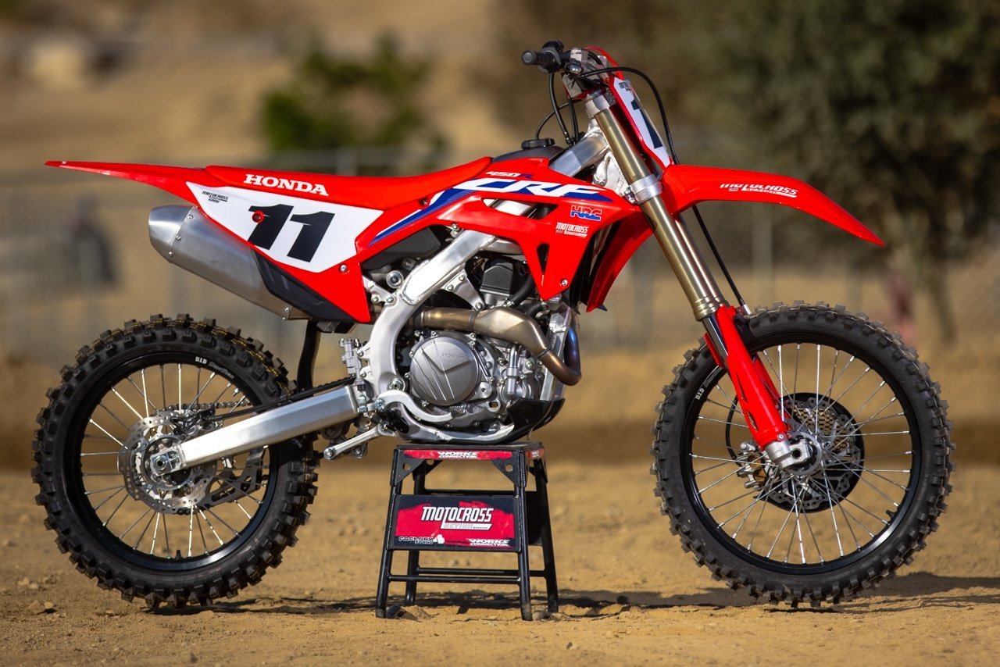
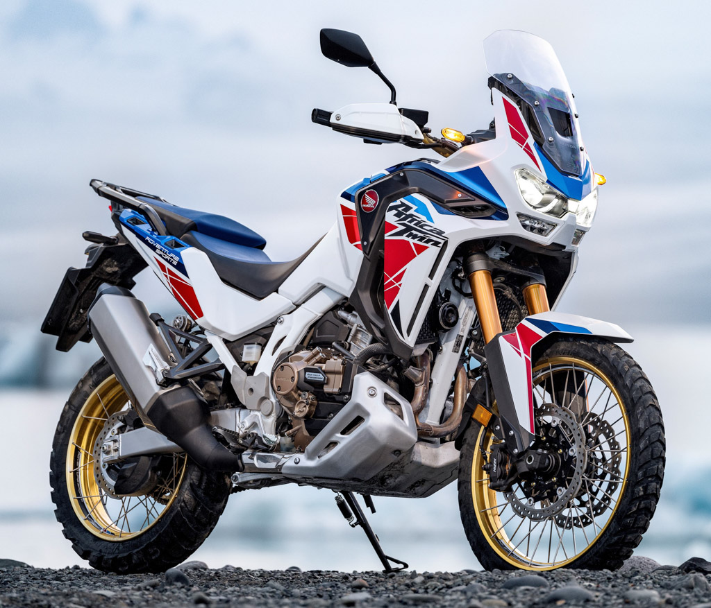
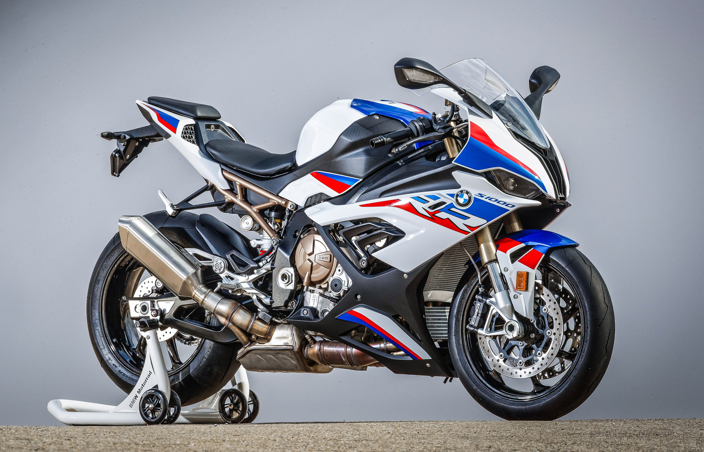
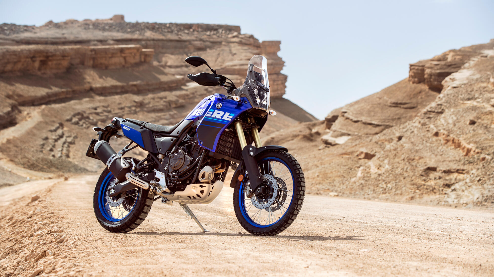
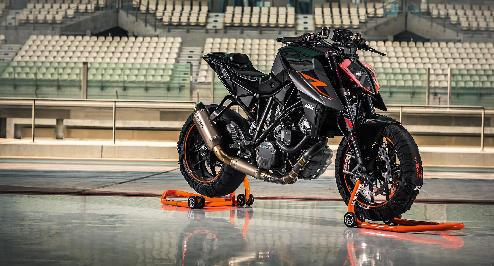

Elian Alderuccio
Ultimo aggiornamento: oggi
Honda crf 450
Voto 9.5
Il telaio completamente nuovo riduce il peso e offre un perfetto equilibrio di rigidità. Il motore offre una potenza medio-bassa e una coppia di bassi regimi, con una risposta dell'acceleratore ancora più fluida. Il controllo di trazione offre 3 modalità di gestione della potenza per la massima trazione della ruota posteriore. La aggressivamente minimale bodywork è sottile, leggera e facile da spostare. Afferrare l’holeshot e costruire il tuo vantaggio non è mai stato così facile. E nemmeno la vittoria.
Adrenalinica
Honda Africa Twin 1100 Adventure Sport
Voto: 9
Il serbatoio da 24,8 litri garantisce un'autonomia di circa 500 km mentre la sella regala comfort ineguagliabile, anche dopo tante ore di viaggio. Le sospensioni elettroniche Showa EERA™, il cambio sequenziale DCT (opzionale) unito al parabrezza più piccolo e alle colorazioni Cracked Terrain ispirate alla prima, leggendaria Africa Twin, rendono la nuova Adventure Sports la moto perfetta per soddisfare la tua voglia di avventura.
Comoda
Bmw s1000rr
Voto: 8.5
I 152 kW (207 CV) ti spingeranno sempre oltre i limiti, alla ricerca della linea perfetta. Una forza irrefrenabile spinge la tua RR sempre avanti, con una coppia max di 113Nm a 11.000 giri/min e una curva di coppia di almeno 100 Nm su un regime da 5.500 a 14.500 [giri/min]. A dieci anni dalla prima generazione di RR, che ha sedotto il mondo motociclistico, sono stati ridisegnati quasi tutti i pezzi della RR, dal frontale al codino. Il risultato: un peso ridotto e prestazioni chiaramente superiori. Sei pronto per la Pole Position e la vittoria? La RR ti aspetta
Prestazionale
Ténéré 700 Rally
Voto: 8.5
40 anni dopo, Yamaha Ténéré 700 torna a catturare l'immaginazione di una nuova generazione di piloti, che vogliono scoprire cosa c'è dietro il prossimo orizzonte. E l'esclusiva Yamaha Ténéré 700 Rally Edition è dotata di colori da rally storici e di specifiche di alto livello. Con livrea da corsa bianca e rossa, grafica speedblock e cerchi dorati, la Ténéré 700 Rally Edition rende omaggio alle moto ufficiali corse a Dakar. Con i suoi componenti premium e il puro DNA Ténéré, questa è l'ultima moto d'avventura di peso medio di Yamaha.
Versatile
Ktm Super Duke 1290
Voto: 8
Evoluzione e adattamento sono determinanti quando si tratta di mantenere la propria posizione di capobranco. La KTM 1290 SUPER DUKE R EVO è una BEAST... evoluta. Forte dell’innovativa tecnologia delle sospensioni semiattive (SAT), questa BEAST non si adatta solo al fondo stradale ma anche agli input del pilota, diventando una cacciatrice fredda e calcolatrice. Una prospettiva spaventosa per chiunque osi sfidarla.
Brutale
